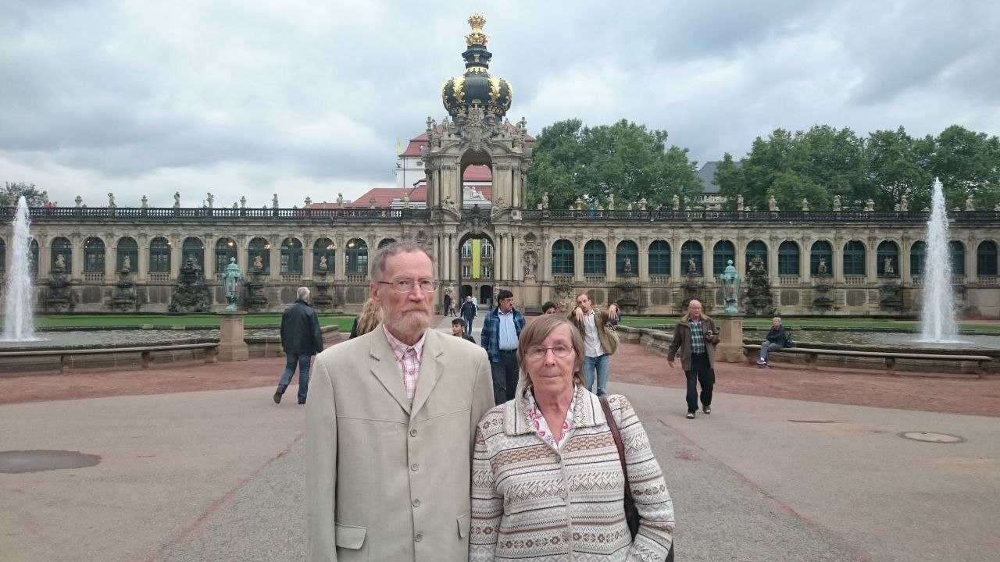
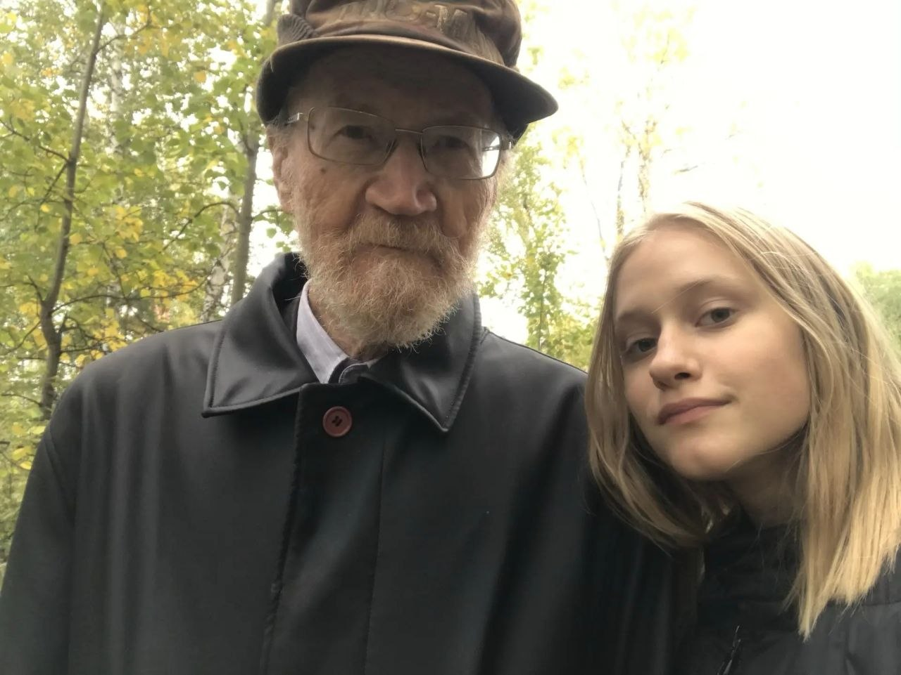
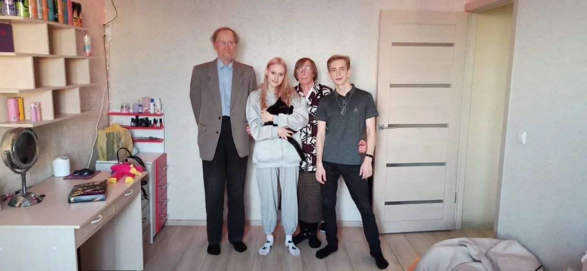
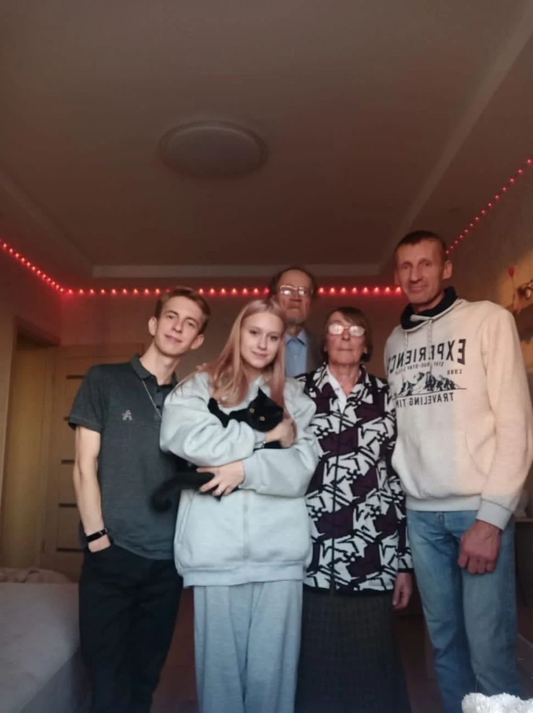
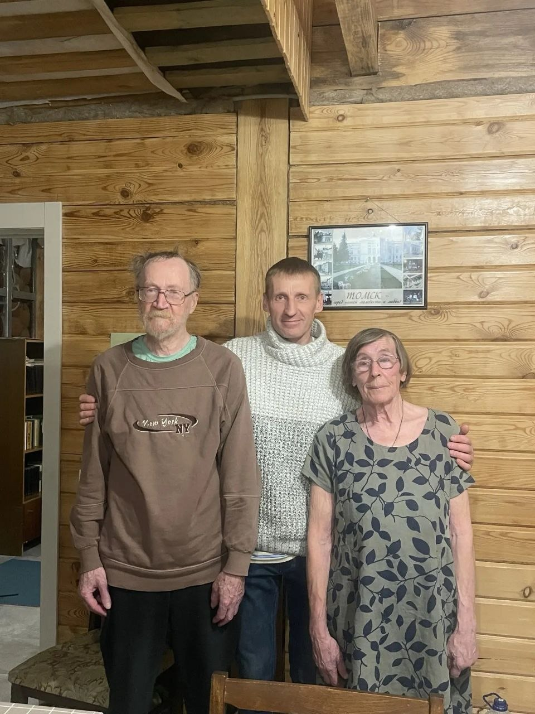
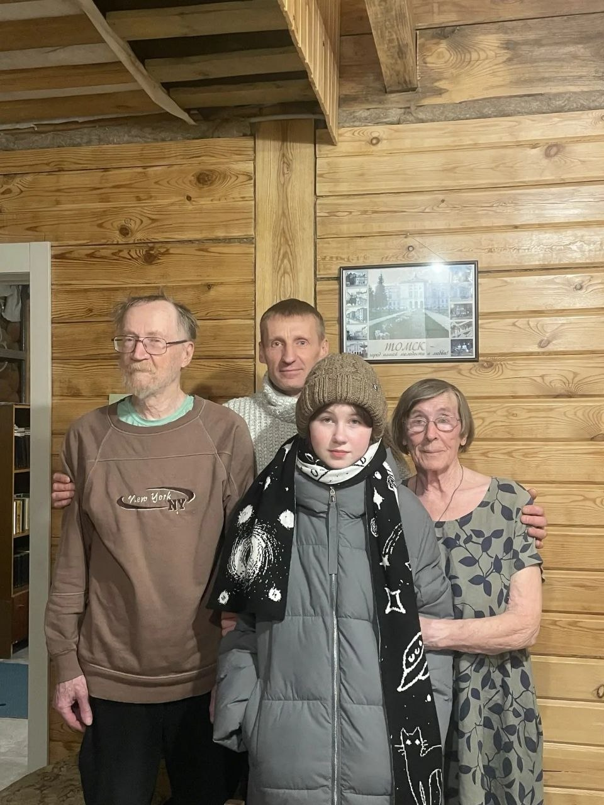
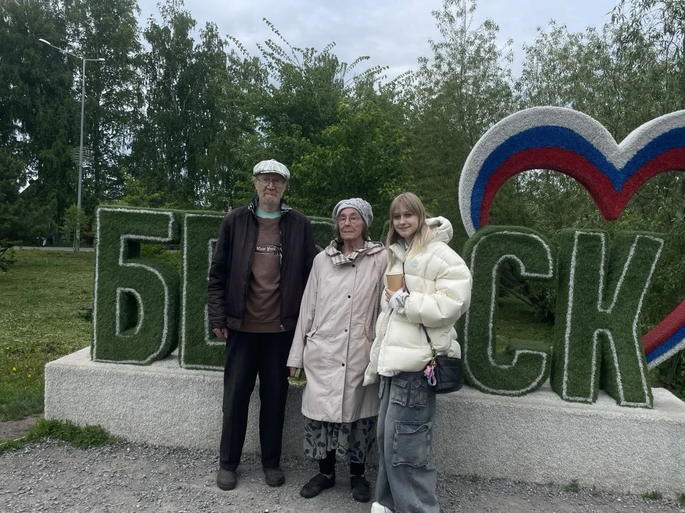

Фотографии
Архив фотографий собирается. Здесь — снимки, уже размещённые на сайте, и ссылки на большую страницу в Одноклассниках.
Дрезден, 2015

Новый, 2020

Краснообск, 2022


Кольцово, февраль 2025


Бердск, май 2025

Одноклассники
Большая часть архива — на странице Юрия Афанасьевича в Одноклассниках:
Если у вас есть фотографии Ларисы Петровны или Юрия Афанасьевича — пожалуйста, прикрепите их к форме воспоминаний или пришлите по почте.